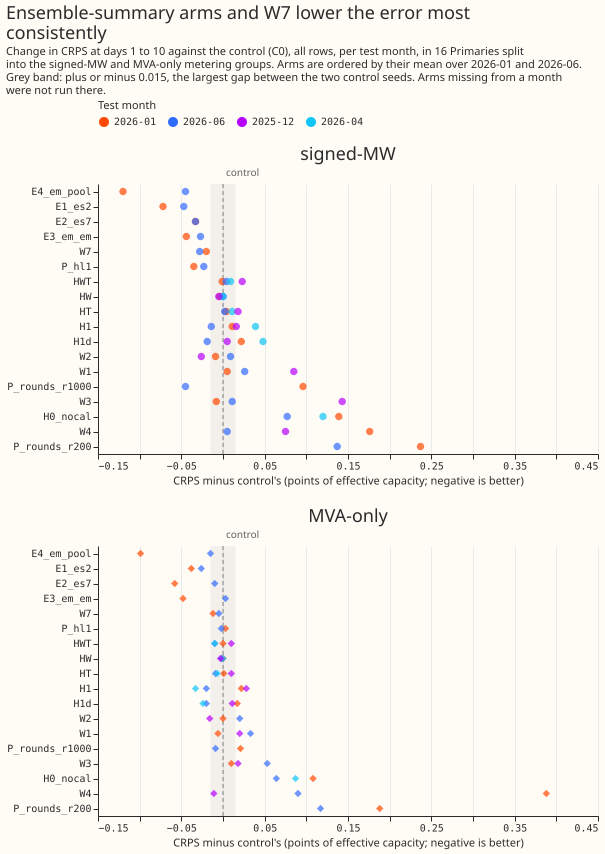
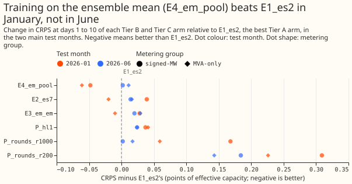
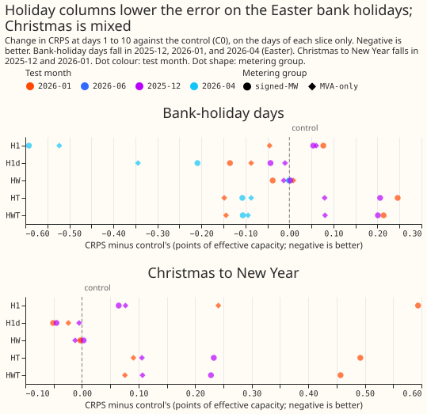

Which changes to the weekly XGBoost demand recipe are worth a full year of testing: holiday columns, winter weather columns, hyperparameters, ensemble-summary inputs, or a split by lead?
Take-home: giving the weekly XGBoost demand model the ensemble's view of the weather lowered the forecast error a little in both main test months and at both metering groups, and no other change did so as clearly. Two ways of giving the model that view did best. The first trains the model on the mean of the 51 ensemble members and then applies it to each member (arm E4_em_pool). The second adds the ensemble's mean and spread of temperature and shortwave radiation (arm E1_es2). They lowered the continuous ranked probability score (CRPS) by 0.015 to 0.120 points and by 0.026 to 0.072 points of effective capacity, which is 0.4% to 2.7% of the control's CRPS. Two main test months cannot support more than a full-year test. Holiday columns lowered the error on the Easter bank holidays by about 0.5 points, but raised it on all days in January and at the Primaries with signed meters at Easter. The winter weather columns were neutral to worse, 200 boosting rounds was clearly worse than 500, and the window-summary arms of the lag-surprise idea all raised the error. Verdict: partly supported. A screen supports no 99% claim: every number here is a point difference from the control, set against a noise floor from refitting with another seed, in a few test months.

What we asked. We asked which small changes to the weekly XGBoost demand model of experiment 87 lower its CRPS enough to deserve a full year of testing. That model fits one XGBoost model per Primary substation, trained on the control member of the European Centre for Medium-Range Weather Forecasts (ECMWF) ensemble forecast. We refitted it monthly with each change on up to four test months, and compared each arm with an unchanged control (C0) over days 1 to 10 of the forecast, the horizon that the electricity distribution network operator (NGED) cares about. Primaries split into two metering groups: the signed-MW six (D5, D9, D10, D11, D14, and D16, whose meters record the sign of power flow) and the MVA-only eight (D2, D3, D4, D8, D12, D19, D21, and D22, whose meters do not). D15 and D18 are scored for the report only. D-codes are anonymised Primary substations. The caveat that matters most for NGED's use: the screen covers days 1 to 10 pooled, and holds no result for any single lead band.
Results
The table lists the change in all-rows CRPS from C0 in the two main test months. Negative is better. The last two rows give C0's own CRPS and the noise floor, the absolute CRPS gap between C0 and a second control fitted with another seed (C1).
| Arm | 2026-01 signed-MW | 2026-01 MVA-only | 2026-06 signed-MW | 2026-06 MVA-only |
|---|---|---|---|---|
| E4_em_pool | -0.120 | -0.099 | -0.045 | -0.015 |
| E1_es2 | -0.072 | -0.038 | -0.047 | -0.026 |
| E2_es7 | -0.033 | -0.058 | -0.033 | -0.010 |
| E3_em_em | -0.044 | -0.048 | -0.027 | +0.003 |
| W7 | -0.020 | -0.012 | -0.028 | -0.005 |
| P_hl1 | -0.035 | +0.003 | -0.023 | -0.002 |
| H1 | +0.011 | +0.022 | -0.014 | -0.020 |
| HT | +0.004 | +0.001 | +0.002 | -0.009 |
| HW | -0.004 | 0.000 | 0.000 | -0.002 |
| W1 | +0.005 | -0.006 | +0.026 | +0.033 |
| W2 | -0.009 | 0.000 | +0.009 | +0.020 |
| W3 | -0.008 | +0.010 | +0.011 | +0.053 |
| W4 | +0.176 | +0.388 | +0.005 | +0.090 |
| P_rounds_r1000 | +0.096 | +0.021 | -0.045 | -0.009 |
| P_rounds_r200 | +0.237 | +0.188 | +0.137 | +0.117 |
| H0_nocal | +0.139 | +0.108 | +0.077 | +0.064 |
| C0's CRPS | 4.509 | 3.823 | 2.725 | 3.527 |
| Noise floor | 0.015 | 0.004 | 0.001 | 0.002 |
- Ensemble-summary arms lowered the error most consistently. E1_es2 (the ensemble's mean and standard deviation of temperature and shortwave radiation replace the control member's two columns) is the only arm of the first screening tier, other than W7, below C0 in both main months and both groups. E1_es2 gained 0.7% to 1.7% of C0's CRPS. E4_em_pool (train on the ensemble mean of the seven weather variables, then apply to the 51 members and pool them) is the best Tier B arm, and beats E1_es2 clearly only in January (second figure below). E2_es7 (E1_es2's summary for all seven variables) is also below C0 in all four cells, but gains less than E1_es2 in 2026-01 at the signed-MW six, although it holds more inputs.
- W7 is a small gain. W7 (trailing means of shortwave radiation and the 3-hour change in the clear-sky index) is below C0 in all four cells, by 0.005 to 0.028 points. Each gap exceeds that cell's noise floor, but one gap (0.005 points) is under 0.01.
- Holiday columns help on bank-holiday days and raise the error on all days in January and at the signed-MW six at Easter. At Easter (2026-04) H1 lowered CRPS on the bank-holiday days by 0.592 points at the signed-MW six and 0.523 at the MVA-only eight. The same arm raised all-rows CRPS by 0.039 at the signed-MW six in 2026-04, and raised the Christmas-slice CRPS by 0.065 and 0.594 points in 2025-12 and 2026-01 at the signed-MW six. H1d (only the signed days to the nearest bank holiday) lowered Easter CRPS by 0.209 at the signed-MW six and 0.344 at the MVA-only eight, and the Christmas slice by about 0.05 at the signed-MW six. Its all-rows changes range from -0.024 to +0.048. In 2026-06, which holds no bank holiday, H1 and H1d lowered all-rows CRPS by 0.014 to 0.020 points; this screen does not explain why. HW did nothing, and HT and HWT raised the Christmas-slice CRPS by up to 0.49 points (third figure below).
- Winter weather columns are neutral to worse. W1, W3, and W4 raised CRPS in at least three of the four main cells, and W4 (sine and cosine of the day of year) raised it by 0.176 and 0.388 points in January. W2 (the monotone constraint on temperature) helped beyond the noise floor only in 2025-12, by 0.026 and 0.016 points.
- Boosting rounds. 200 rounds is clearly worse than 500 in every cell (+0.117 to +0.237). 1000 rounds helps in June (-0.045 and -0.009) and hurts in January (+0.096 and +0.021). A half-life of 1 year (P_hl1) lowers CRPS in 3 of 4 cells, by up to 0.035 points.
- The calendar columns the control holds matter. Removing the hour and weekday columns (H0_nocal) raised CRPS by 0.064 to 0.139 points, so those columns carry real information.
- Tails. The control's 95% upper quantile covers 78% of readings at the signed-MW six and 90.5% at the MVA-only eight in January (nominal 95%). No arm repairs that. 1000 rounds lowers coverage further, from 0.781 to 0.749 and from 0.922 to 0.881 at the signed-MW six in January and June.


Window-summary arms hurt. The arms WS A1 to A3 (window summaries of the lag surprise of
experiment 391) were scored against that
experiment's b0 control on 7 Primaries (the signed-MW six and D8), over 1,034,930 scored
half-hours at the signed-MW six and 172,780 at D8. All rows, change in CRPS from b0 (b0's CRPS
in brackets): at the signed-MW six
+0.100, +0.106, and +0.111 for A1, A2, and A3 (3.123); at D8 +0.134, +0.041, and +0.121 (7.684). The
second b0 seed differs by at most 0.001 on all rows and 0.010 on the 21,601 event-lag rows outside
events, where A1 to A3 raised CRPS by +0.114, +0.250, and +0.275 (b0 4.957). None of the three
arms improved on b0 in any group or slice.
Folds and dropped half-hours
Each fold trains on all rows from 2024-04-01 up to a 24-month window and scores the following
month's daily runs. All 16 Primaries are scored in every fold. 2026-01 and 2026-06 are the main
folds, and 2025-12 (Christmas) and 2026-04 (Easter) are event folds. The scorer dropped 11
half-hours flagged substation_zero in 2025-12 and none in the other three folds.
| Fold | Training window (months) | Half-hours scored | C0's CRPS (signed-MW, MVA-only) | Noise floor (signed-MW, MVA-only) | Flagged half-hours dropped |
|---|---|---|---|---|---|
| 2025-12 | 20 | 332,599 | 4.326, 4.375 | 0.003, 0.006 | 11 |
| 2026-01 | 21 | 333,312 | 4.509, 3.823 | 0.015, 0.004 | 0 |
| 2026-04 | 24 | 321,263 | 2.988, 4.285 | 0.002, 0.002 | 0 |
| 2026-06 | 24 | 248,024 | 2.725, 3.527 | 0.001, 0.002 | 0 |
Predictions
- P1 (ensemble-summary gains larger in the high-spread tercile): not tested. The spread-tercile slices were not scored. The all-rows gain is small, as predicted.
- P2 (W1 lowers winter CRPS by 0.05 to 0.15 points and all rows by under 0.03): not confirmed. W1 raised winter CRPS by 0.085 points at the signed-MW six in 2025-12, and moved January by +0.005 and -0.006.
- P3 (holiday columns lower holiday-day CRPS by 0.3 to 1.0 points and move other rows by under 0.01): not confirmed. H1 lowered Easter CRPS by 0.5 to 0.6 points but moved all rows by up to 0.039 points, and raised the Christmas-slice CRPS.
- P4 (W4 does not help): confirmed. W4 was worse in 5 of the 6 cells in which it was scored, and clearly worse in January.
- P5 (at most 3 of 13 hyperparameter settings pass): not tested. Of the 13 settings, 2 ran: the number of boosting rounds (one 1000-round fit scored at 200, 500, and 1000 rounds) and the 1-year half-life. The other 11 did not run, and the go rule needs 4 folds.
- P6 (four-band split moves CRPS by under 0.03 and shows a jump at a band edge): not tested. The lead-band split was not run.
Checks
- Median minus mean forecast, per site, and the error of the mean or median forecast beside each CRPS contrast: not computed for this page, because the page uses only the committed screen table.
- Audit triggers. Trigger 2 fires: W1 and the holiday columns contradict P2 and P3, and no explanation was tested. Trigger 5 fires: E2_es7 holds E1_es2's inputs and more, and scores worse than E1_es2 at the signed-MW six in 2026-01 (-0.033 against -0.072, a gap above the 0.015 noise floor). No audit has run. Every number here is an interim screen figure.
- Examples of the forecasts and the avoidable-curtailment cost are not on this page: the committed result files hold neither.
What did not run
None of the following is a negative result.
- Tier D (the lead-band split B4 and B2, W5, W6) and six Tier C settings (P_eta010, P_depth4, P_depth8, P_mcw10, P_sub06, P_lambda10): dropped by the maintainer on 2026-10-31, because they do not feed the model-release or neural-recipe decision.
- E5 (
all51): the other five weather variables hold no per-member data before 2025-07. - E6 (
ensq): not built. The arm needs a clear-sky helper that W7 gained only afterwards, and the maintainer's list did not include it. - Round 2 and stage 2: the folds 2025-10 and 2026-03 and the full-year evaluation of the best three arms were not run, because the manager cut the scope to "write up what exists". The pre-registered go rule (a win in at least 3 of 4 base folds) is therefore not applied. The drop rule can be read on the two main folds: W4, P_rounds_r200, and H0_nocal are worse than C0 by more than the noise floor in all four main cells. The rule drops W4 and P_rounds_r200; H0_nocal is a deliberate ablation of the control's hour and weekday columns, not a candidate. The screen-level reading is that E4_em_pool, E1_es2, E2_es7, and W7 improve all four main cells.
- Fold coverage. The winter arms W1 to W4 ran on 2025-12 and the main folds, and the holiday arms on all four folds. The ensemble arms, W7, P_hl1, and the rounds fits ran on the main folds only.
Method
Arms. Every arm refits monthly, fits one XGBoost model per Primary per fold on the control
member, and keeps colsample_bytree at 1.0. The 17 input columns of the control are the seven
weather variables, the solar zenith and azimuth, local hour, local weekday, a lockdown indicator,
days_to_christmas, the lead, and the three origin lags. Arms that ran:
| Tier | Arm | Change |
|---|---|---|
| A | C0, C1 | Control with seeds 0 and 1; the gap between them is the noise floor |
| A | E1_es2 | Mean and standard deviation of temperature and shortwave across the 51 members replace the two control-member columns |
| A | H0_nocal | Control without hour and weekday columns |
| A | H1, H1d | Bank-holiday flag, signed days to the nearest bank holiday, and the flags for the days before and after; H1d adds only the signed days |
| A | HW, HT, HWT | Adds is_weekend, holiday_type, or both |
| A | W1 | Trailing means of temperature over 6, 24, 72, and 168 hours and the degrees below 15.5 °C of each |
| A | W2, W3, W4 | Monotone constraint on temperature; W1 plus W2; sine and cosine of day of year |
| A2 | W7 | Trailing means of shortwave over 3, 6, and 24 hours and the 3-hour change in the clear-sky index |
| B | E2_es7, E3_em_em, E4_em_pool | E1_es2 with all seven variables; train and apply on the ensemble mean; train on the mean, apply to the 51 members and pool |
| C | P_rounds, P_hl1 | One 1000-round fit scored at 200, 500, and 1000 rounds; recency half-life of 1 year |
| Separate | WS A1 to A3 | Window summaries of the lag surprise, scored against experiment 391's b0 |
Pre-registered rules. An arm is dropped if its days 1 to 10 CRPS exceeds C0's by more than the noise floor in both main folds at both groups. An arm goes to the full evaluation if it beats C0 in at least 3 of its 4 base folds and its pooled gain exceeds the noise floor at either group. Every change here uses little or no extra compute in production, so any gain whose full-year interval excludes zero would be worth porting, and a screen supports no such claim. The committed table holds raw scores only, with no widened (factor 1.15) score.
What the plan found out before fitting. The control already holds days_to_christmas, so the
plan dropped the holiday arm H2. Training data start on 2024-04-01, so only the 2026-04 and 2026-06
folds have the full 24-month window. The four screen months in the brief hold almost no bank
holidays, so the plan added the two event folds. Only temperature and shortwave exist for all 51
members before 2025-07, which limits E1_es2 to those two variables and made E5 impossible. No
national school-holiday calendar exists, so the plan skipped arm H3.
Run record and changes since the plan
Fits ran mostly on the CPU, with 4 threads per process. The graphics processor was about three times slower than the CPU for these fits while other sessions shared it. The 2026-01 fold for the first six Primaries (D2, D3, D4, D5, D8, D9) was fitted on the graphics processor, except W1 and W3, which were refitted on the CPU. Every other fit ran on the CPU. For those six Primaries, W1 and W3 are therefore compared with a control fitted on a different device. The seed-to-seed difference between C0 and C1 is at most 0.015 points of CRPS, and the two devices were not compared directly.
The first 8 Primaries (D2, D3, D4, D8, D5, D9, D10, D11) ran first on both main folds, then the other 8. The order let the interim arm table appear after a fraction of the compute.
The code review came after the first fits. A fresh Sonnet review of the arm code ran after the first Tier A fits instead of before them, which breaks the order the experiment skill asks for. The review found that the past half of the trailing temperature windows (W1, W3) stitched the earlier runs together member by member, so the past temperature differed between the 51 members of one run. The past half is now the ensemble mean of the earlier runs' first day, identical for all members. The W1 and W3 fits made before the change were moved aside and refitted, and no result on this page uses them.
Tier C was cut to eight settings, and then to two fit sets. The eight settings were P_rounds,
P_eta010, P_depth8, P_depth4, P_mcw10, P_sub06, P_lambda10, and P_hl1. Only P_rounds
and P_hl1 ran (see "What did not run").
Cleaned data. The scorer drops half-hours flagged substation_zero in the cleaned power table
from the actuals, and prints the number dropped per fold (see "Folds and dropped half-hours").
Window-surprise arms (e00396_surprise.py) reuse experiment 391's stage 2 code, stage-1 tables,
refit months, and b0 control, at 150 rounds on the seven Primaries of 391's secondary arms. The
printed report is results/window_surprise_scores.txt.
Problems caused by the move: none.